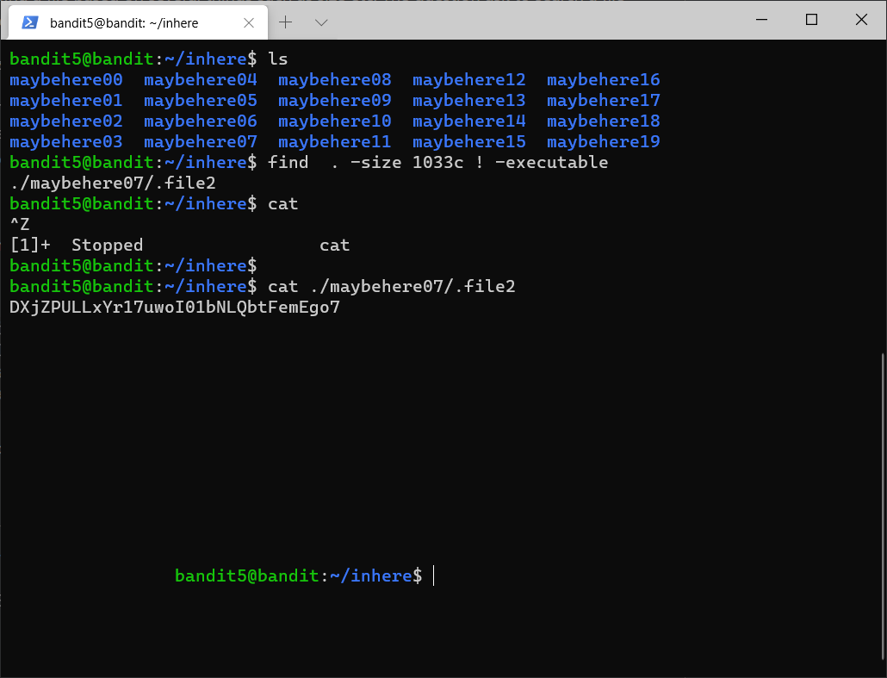

Bandit Wargame write up
- Level 0
The command used is rather simple:
ssh bandit0@bandit.labs.overthewire.org -p 2220

Now we entered the machine, lets go level solve level 1.
- Level 1
The clue given is there is readme file. So we can see it by using ‘’ls’’ command and read the readme

Then we’ll get the password which is ‘’’ boJ9jbbUNNfktd78OOpsqOltutMc3MY1’’’
Now we continue to log on as bandit1 with given password using ssh
- Level 2
Here we will stumble a file with name of ‘’–‘’. The funny thing is we cannot directly read the file because if written is CLI, the dash usually holding up additional argument of the command. One of the way is to write full path of the ‘’–‘’ file by writing the directory or just simply ‘’~/-‘’. The ‘’~’’ will determine the path of the -.

After getting the password, we can proceed to next level
- Level 3
Here we can see that there is file name ‘’’spaces in this filename’’’. Once more CLI don’t really recognize/differentiate either a space between two so we must specifiy that the spaces is name of file not adding other command in the line. We can solve this by putting ‘ before and after the name of file.
- Level 4

Here we are dealing with hidden files in a directory. However, we can use vim in navigate and access the hidden file.
- Level 5
Here at the first command, cat , we can see that most of the file is gibberish but there are some line that is readable by human. With this we can determine that one of the file is readable. We can know by the checking datatype of the file. Then vim the file.
- Level 6
Here we can see that there are multiple directories inside inhere. So we have to use command that will find file that is human-readable, 1033 bytes in size, not executable.

The command made is incomplete because we still didn’t consider the characteristic of human readable. But still, the password is gained
- Level 7
Here we can see that there is multiple file with user bandit7,owned by group bandit6 and 33 bytes in size. However upon checking it, most of the file we cannot accessed it. Therefore we put 2>/dev/null at the end of the command . Stdin is 0, Stdout is 1 ,and Stderr is 2. This command said that we put the error to null, thus only show the permissible file.
- Level 8
Here we can see that the line of the file is near to 10k. it is a hassle to read. It is said the password is beside the word millionth

- Level 9
Again with the problem, it is 1000 line files. The clues is it is only repeated once
After command sort and count, we can see that there is single line that repeated once. And that is the password
- Level 10
Upon opening , the data is gibberish
With this command, we can find the password which are truKLdjsbJ5g7yyJ2X2R0o3a5HQJFuLk.
- Level 11
It is stated that the data is encoded with base64. We just decode it back.
- Level 12
It is stated that the data is encode using ROT13
- Level 13